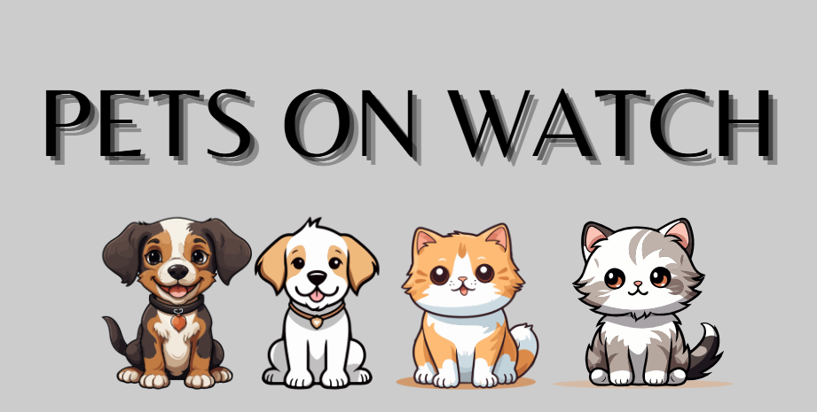

Seu pet merece o melhor cuidado
Encontre planos e parceiros confiáveis para cuidar do seu melhor amigo

Encontre planos e parceiros confiáveis para cuidar do seu melhor amigo
A Pets on Watch nasceu da paixão por tecnologia e da vontade de melhorar a rotina de cuidados com os animais de estimação. Como estudantes de Ciência da Computação, identificamos a necessidade de uma solução que facilitasse o monitoramento da saúde dos pets. A ideia surgiu ao percebermos as dificuldades enfrentadas pelos donos para lembrar de consultas, vacinas e manter o histórico de cuidados.